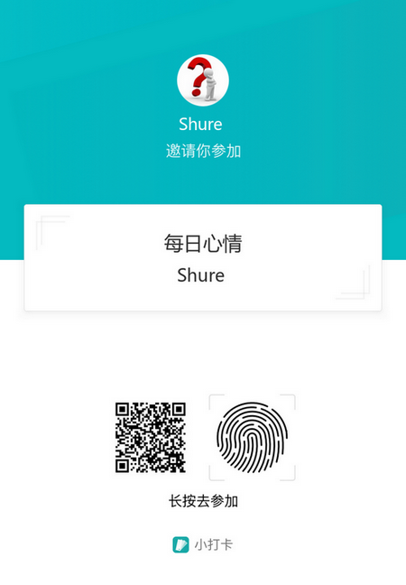

每天抽一点时间来阅读
真正的读书使瞌睡者醒来，给未定目标者选择适当的目标。正当的书籍指示人以正道，使其避免误入歧途。
刚在上篇文章中说完坚持这件事，就发现一款很不错的打卡产品，叫做 “小打卡” 的微信小程序，在这个平台上你可以建立自己的圈子，邀请几位好友，分享一些内容；我随便刷了刷，上面的圈子主题还挺多，有运动的，有写作的，有阅读的，有写一些读后感的，还有学英语的，每天读一段英文句子，我觉得这种模式就很好。一些兴趣爱好相同的人聚在一起，互相学习，互相讨论，看着每天打卡学习的小伙伴都在努力提升自己，你还能安稳的享受这生活的安逸么？我也在小打卡上开了一个圈子，叫做 “每日心情” ，我的主题内容很简单，每天发表一点鸡汤，心情，配上一张唯美的图片，目的在于锻炼每天坚持做这件事，如果你能坚持打卡一年半载，或许这已经成为你的习惯，那么你可以尝试做一些更有意义的事，比如写作，阅读。

前面写到过的写作，有人也不止一次的说起过，几乎都是同样的问题，就是我也想写，但是每次写的时候总是不知道要写啥，或者害怕写的东西被别人看到等等，于是引发了今天这个话题–阅读。
我所说的阅读，不是传统的书籍阅读，而是指碎片话阅读，或许有人会说，碎片话阅读那只是噱头，其实不然，现在的社会潮流，手机是阅读的很好工具，智能手机几乎覆盖了所有人，尤其是年轻人，吃饭，坐车，睡觉都几乎已经手机不离手了，只要抽出刷朋友圈，刷微博三分之一的时间用来阅读，那每天的阅读量估计能达到 5w 字以上了。当然我也不反对书籍的阅读，如果要系统的学习一门技术，我还是建议去买一本不错的书，因为书上的知识比较系统，讲的比较全面，适合那些从入门到深入学习的人；反过来，你想通过碎片化阅读去学习一门技术，那是不可能的，就算学到一点知识，那也可能只是一个知识点，仅此而已。
这是一个信息化时代，各种各样的信息满天飞，我们怎么能在这些信息中筛选出自己感兴趣有价值的信息呢，我推荐使用微信公众号，选择关注一些技术牛人大佬的公众号，通常会不定期的写技术分享，或者业界一些有趣的事，这要比在头条，微博上筛选信息来的快。其实还有很多获取阅读的途径，比如知乎专栏，得到专栏，极客时间专栏，知识星球等等。这些产品的模式是近几年业界的一个亮点 “知识付费”，他们输出的知识内容都要求付费。我是不反对这种模式的，首先对于作者来说，付费是更大鼓励与认可，输出的文章自然也会保证质量；对读者来说，我付费了，就会花更多是时间去思考作者的观点与想法；所以知识付费是双赢互利的。
我每天都会花大量的时间去阅读，除了公众号以外，我也订阅了几个专栏，包括朱赟在极客时间上的“管理课程”，左耳朵耗子在极客时间上的“左耳听风”，stormzhang 在知识星球上的 “帅张和他的朋友们” ，我在这些平台上获得了很多有价值的东西，包括认知，管理，技术，理财等等，所以不管你处于什么阶段，每天抽出一点时间来阅读，对你的见识和眼界都是有很大帮助的。

更多文章请关注微信公众号： zhiheng博客
转发分享、点赞赞赏才是真爱 [斜眼笑]